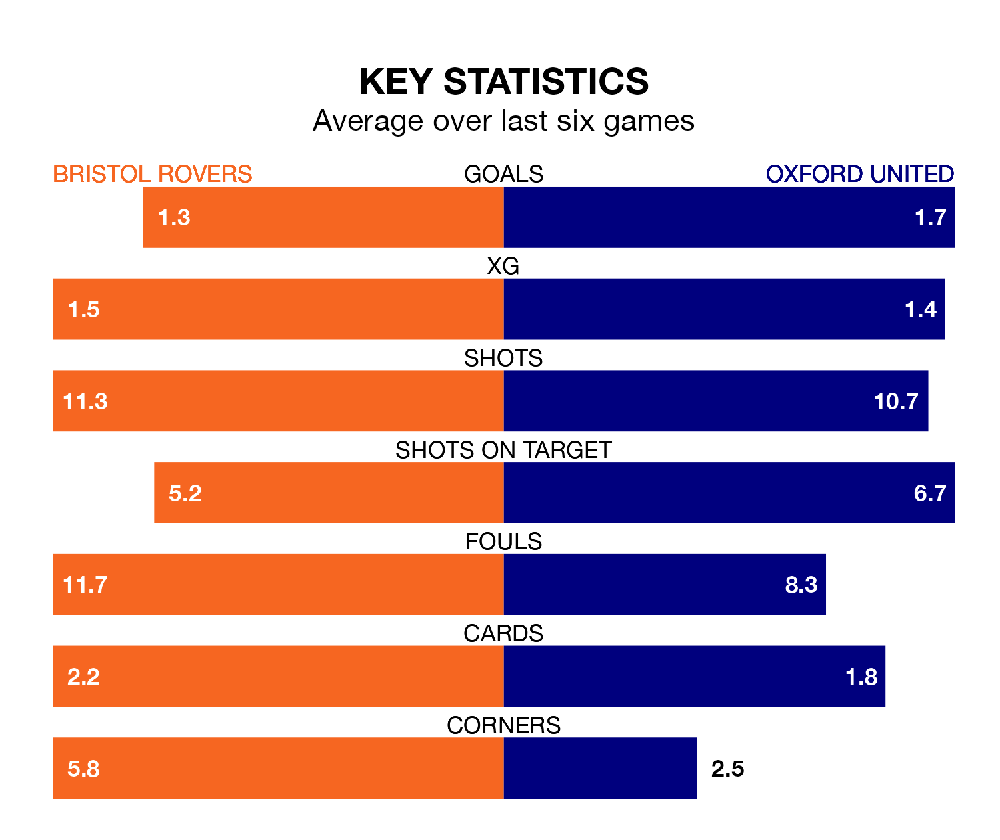

Bristol Rovers welcome Oxford United to the Memorial Stadium on Saturday looking to pick up points to end their four-game losing streak.
Rovers' struggles have left them with six points from their last six EFL League One matches, while their opponents have earned nine from a possible 18.
With 45 goals in 27 games so far this season, Oxford are scoring more than average in the league with 1.7 goals per game. And they are conceding fewer than average, letting in 31 goals at a rate of 1.1 per game.
Rovers, meanwhile, are average scorers, with 1.3 goals per game. They have conceded 1.4 goals per game.
In the last 10 years, Rovers and Oxford have played each other on 17 occasions. Rovers won nine of them, Oxford five, and they drew three times.
On average, the Gas scored 1.5 goals and the Us 1.1 in those matches.
Their last meeting was on October 7, when Oxford won 2-1 at home.
The Gas's Aaron Collins is the league's most creative player, racking up eight assists in 27 appearances so far this season.
For United, Cameron Brannagan has set up the most goals, having laid on five assists in 25 games.
The Us are sixth in the table after 27 games, of which they have won 15 and drawn four, earning 49 points.
The home side are seven places behind the visitors in 13th, with nine wins and seven draws putting them on 34 points.
Rovers' last match was on Tuesday, a 1-0 loss against Exeter City.
Oxford lost 1-0 against Barnsley last time out, also on Tuesday.
Updated: 08:51 (UTC), 25/01/24